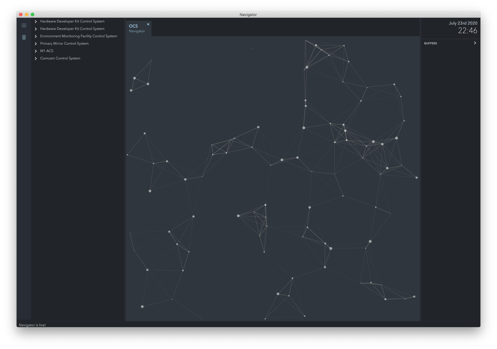

13. UI Framework¶
The UI Framework provides a GUI toolkit for the OCS. One of the GUI apps is called Navigator, and sometimes referred to as the “Engineering UI”, as it allows you to visualize models built with OCS SDK. You can use the Engineering UI to see the data produced and consumed by your controllers.
Navigator can run on MacOS or a Linux Desktop environment. macOS Mojave, Catalina and CentOS 8 Desktop have been verified.
13.1. Installation¶
To install Navigator you will need to donwload the packaged app and set up your local environment. Downloads are available for macOS and centOS.
wget http://52.52.46.32/srv/gmt/releases/navigator/centos8/ocs_navigator.AppImage
wget http://52.52.46.32/srv/gmt/releases/navigator/macos/ocs_navigator.zip
This is a packaged binary app that you can run after you have set up your environment. For CentOS you will need additional dependencies:
dnf -y install fuse clang dbus-devel gtk3-devel libnotify-devel \
xorg-x11-server-utils libcap-devel \
cups-devel libXtst-devel alsa-lib-devel libXrandr-devel \
nss-devel \
libXScrnSaver
13.1.1. Setting up your enviornment¶
The Engineering UI uses the gmt_env if you have set that up. If you don’t have that, you’ll need to set up a $GMT_LOCAL environment. This is very similar to setting up the SDK.
Note
For bash, you’ll need to edit the ~/.bash_profile. For zsh you’ll need to edit ~/.zshrc.
To set up a $GMT_LOCAL environment, first designate a directory and set your ~/.bash_profile or ~/.zshrc environment variables. Asumming the path is /home/gmto/working_dir, then your export should look like
Create the following folder structure in your $GMT_LOCAL directory
|-- etc
| |-- bundles
| | |-- bundles.coffee
| | |-- ocs_local_bundle.coffee
| |-- conf
|-- lib
|-- modules
The bundles.coffee should have
module.exports =
ocs_local_bundle: {scope: "local", desc: "GMT OCS SDK bundle"}
The ocs_local_bundle.coffee should look like
module.exports =
name: "local"
desc: "List of local development modules"
elements: {}
This will give you the base parameters to load the local environment. The elements key in this example is intentionally empty. This will change as you add OCS bundles. You will need to have corresponding model files for the bundles you define.
Note
The bundles you define need to have corresponding webpack model files in $GMT_LOCAL/lib/js. You will need to copy these files on your own.
Now you can star the Navigator app by double clicking on the icon. If you have done all of the above correctly you will see the starfield animation.
{kind=link}
{kind=link}
{kind=link}
{kind=link}
13.4. Troubleshooting Guide¶
The engineering app loads the local bundles defined in $GMT_LOCAL/etc/bundles and the webpack model files in $GMT_LOCAL/lib/js. If you enable bundles, but no corresponding model lib file exists, the UI might end up an incosistent or ‘blank’ state.
- No navigation tree: the navigation tree is rendered from the local bundles enabled in
$GMT_LOCAL/etc/bundles. The bundles defined there need to exist in your$GMT_LOCAL/lib/jsfolder. You can create these by runningwebpackon your model. - Incositent Navigation tree: If you don’t see a newly added (or still see a deleted element in the tree) it’s because Navigator persists your menu state, so when you make changes to your bundles or edit your model files you need to manually clear the application cache. Press
CMD+,to see the Navigator preferences. Find the Reset application state button and press it. If this works, your menu will have been rebuilt and should be consistent again. - Blank screen: If the UI starts with a blank screen, it’s likely there’s an incosistent configuration, for example, you defined a bundle, but there is no webpack version of the model in
$GMT_LOCAL/lib/js. Open the Developer console and check the error message.
In some cases the cached data might have caused an error. There are three possible ways to fix this in order of severity:
Open the app development console by selecting from the OS menu Developer > Toggle developer tools. In the developer console type persistor.purge() press Enter and restart the app.
If that fails,
Delete the app, and reinstall.
If that also fails, try deleting the cache directly from your disk
rm -fr ~/.config/Electron
rm -fr ~/.config/ocs_navigator
If this does not fix your problem, it’s possible that your bundle and your modules are inconsistent. Check that what you define in $GMT_LOCAL/etc/bundles has a corresponding webpack file in $GMT_LOCAL/lib/js.
Unresponsive UI: in some case if the UI becomes unresponsive, press
CMD+Rto refresh. If that fails to solve the problem, restart the CLI app.No data: Ensure that the ports used by the controllers to publish data are accessible through the firewall. The following will disable the firewall on CentOS:
$ sudo systemctl stop firewalld